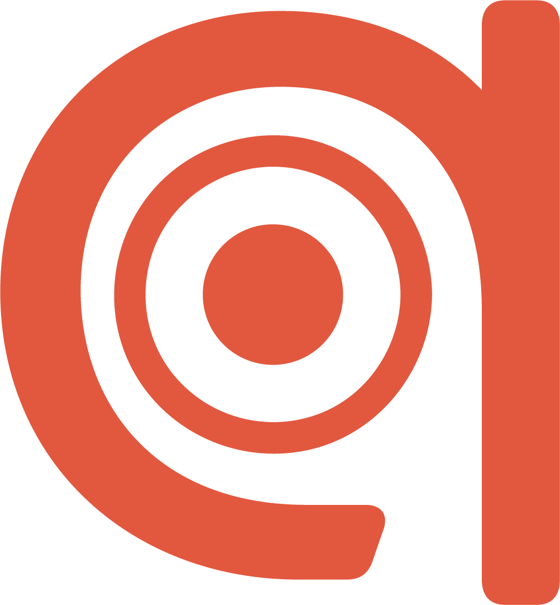

Il tuo smart glove per il sollievo neurale personalizzato e il benessere profondo.
Neural Balance System

Il tuo smart glove per il sollievo neurale personalizzato e il benessere profondo.
Tocca uno dei punti color terracotta sulla mappa per visualizzare i dettagli terapeutici o usa la ricerca sintomi.
La digitopressione è una pratica millenaria derivata dalla Medicina Tradizionale Cinese che prevede la stimolazione di specifici punti del corpo (agopunti) per riequilibrare l'energia, sciogliere tensioni e alleviare disturbi.
AcuWear evolve questo concetto integrando la tecnologia avanzata: utilizza micro-impulsi elettro-tattili e vibrazionali al posto della pressione manuale, calibrando il trattamento in base ai tuoi dati biometrici live per un sollievo rapido e personalizzato.
Il guanto AcuWear è dotato di sensori biometrici flessibili che monitorano costantemente la Temperatura Cutanea e la Variabilità della Frequenza Cardiaca (HRV).
Questi dati permettono all'algoritmo AI di rilevare stati di stress o tensione nervosa. In risposta, il guanto attiva micro-attuatori posizionati sugli agopunti chiave, emettendo frequenze terapeutiche specifiche per stimolazione del sistema nervoso parassimpatico e favorire il rilassamento.
Principali Punti sul Palmo:
Principali Punti sul Dorso: